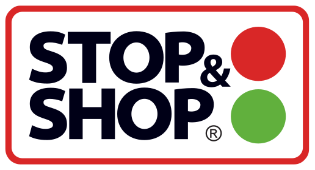

대표 로고대표 브랜드 마크
대표 로고대표 브랜드 마크스톱 앤 숍 Stop & Shop
스톱 앤 숍(Stop & Shop)은 1914년 미국 매사추세츠에서 시작한 슈퍼마켓 체인이다. 미국 북동부를 대표하는 식료품 체인으로, 네덜란드 아홀드 델헤이즈(Ahold Delhaize) 산하다.
최종 업데이트
스톱 앤 숍은 어떤 브랜드인가
스톱 앤 숍(Stop & Shop)은 1914년 미국 매사추세츠에서 시작한 슈퍼마켓 체인이다. 미국 북동부를 대표하는 식료품 체인으로, 네덜란드 아홀드 델헤이즈(Ahold Delhaize) 산하다.
스톱 앤 숍은 어떻게 봐야 할까
스톱 앤 숍은 100년 역사의 미국 북동부 대표 슈퍼마켓으로, 아홀드 델헤이즈 미국 사업의 핵심이다. 설립·운영 주체, 업태, 시장 포지션을 함께 보면 리테일·커머스 안에서의 위치가 또렷해진다.
스톱 앤 숍은 어떻게 시작되고 성장했나
1914년 매사추세츠 서머빌에서 'Economy Grocery Stores'로 출발했다. 미국 북동부 대표 슈퍼마켓으로 성장했고 1995년 아홀드에 인수돼 현재 아홀드 델헤이즈 산하다.
스톱 앤 숍의 브랜드 아이덴티티는 무엇인가
스톱 앤 숍의 시각 아이덴티티는 신호등(스톱라이트) 모티프를 핵심으로 한다. 회사명에 담긴 '멈추고 산다'는 의미를 빨강·초록 원형으로 형상화한 신호등 표식은 수십 년간 워드마크와 함께 쓰였다.
2008년에는 모회사 산하 자매 체인 자이언트 푸드와 공유한 다색 과일바구니 형태의 추상 심벌과 보라색 글자체로 전면 교체했으나, 소비자에게는 직관성이 떨어진다는 평을 받았다. 2018년 무렵 아홀드 델하이즈 체제에서 약 7천만 달러를 들인 리브랜딩으로 다시 빨강·초록 두 원의 신호등 심벌과 단순하고 깔끔한 회색 계열 워드마크로 회귀했고, 코네티컷 하트퍼드 지역 매장을 시작으로 신선·간편식 강화와 현대화된 매장 디자인을 함께 적용했다.
스톱 앤 숍의 대표 제품과 서비스는 무엇인가
식품·생필품 등 슈퍼마켓 상품을 판매한다. 미국 북동부 지역에 집중한다.
스톱 앤 숍은 지금 어떤 상태인가
스톱 앤 숍 로고는 어떻게 변해왔나
대표 로고대표 브랜드 마크
대표 로고 1보관 이미지 1자주 묻는 질문
스톱 앤 숍는 어느 나라 브랜드인가요?
스톱 앤 숍는 미국의 리테일·커머스 브랜드입니다.
스톱 앤 숍는 언제 설립되었나요?
스톱 앤 숍는 1914년 설립되었습니다.
스톱 앤 숍의 브랜드 아이덴티티는 무엇인가요?
스톱 앤 숍의 시각 아이덴티티는 신호등(스톱라이트) 모티프를 핵심으로 한다.
스톱 앤 숍의 대표 제품은 무엇인가요?
식품·생필품 등 슈퍼마켓 상품을 판매한다.
스톱 앤 숍는 현재 어떤 상태인가요?
국가: 미국(퀸시); 모회사: 아홀드 델헤이즈; 산업: 리테일·커머스
스톱 앤 숍의 본사는 어디에 있나요?
스톱 앤 숍의 본사는 퀸시에 있습니다(위키데이터 기준).
스톱 앤 숍의 모기업은 어디인가요?
스톱 앤 숍의 모기업은 아홀드 델레이즈입니다(위키데이터 기준).
출처와 검증
스톱 앤 숍 관련 참고: 공식 웹사이트 · 위키데이터 Q3658429 · 영어 위키백과. 브랜드명은 한글과 원어를 함께 표기하되 데이터에 없는 표기는 만들지 않습니다. 기원 국가·설립연도는 검수된 정의문에서 확인된 값을 우선하고, 없을 때만 공식 웹사이트 URL이 일치하는 위키데이터 개체의 값을 씁니다. 위키데이터 값은 2026-09-07 기준입니다.